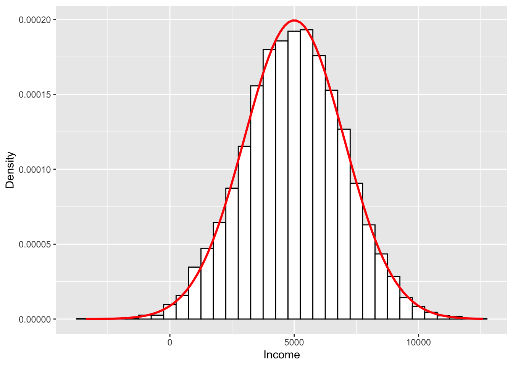
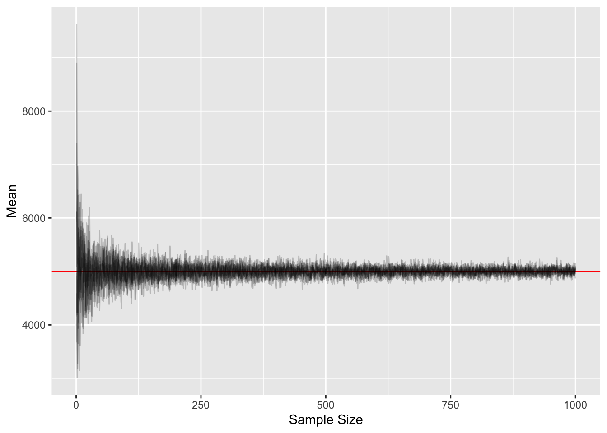
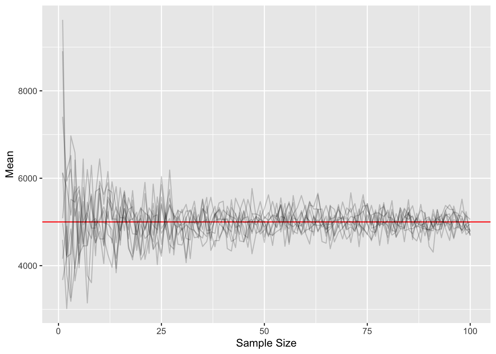
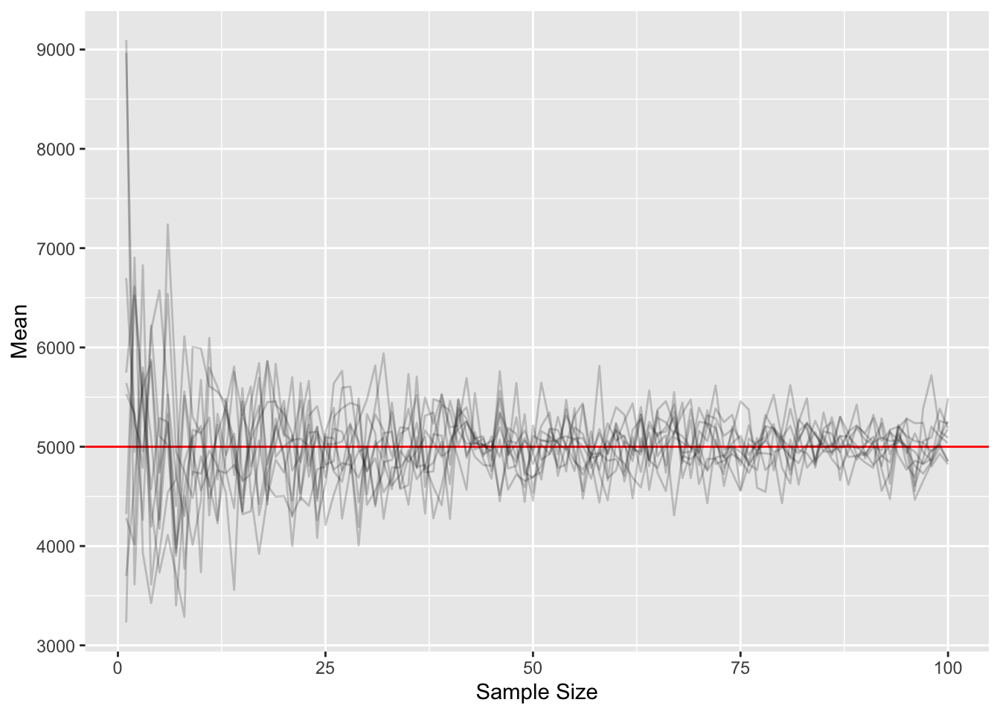

大数の法則？
統計学を勉強するなら「大数の法則(Law of large numbers)」は一度くらいは聞くはず。この法則が知らなくても統計的手法を「使う」のは問題ない。しかし、その手法の背後にあるこれらの法則を知らないと「使う」ことは出来ても「理解」することは難しい。
とにかく、この法則は強法則と弱法則があるが、簡単に言えば「ある母集団から相互独立的に選ばれたサンプルのサイズが大きければ大きいほど、そのサンプルの平均値(標本平均)は母集団の平均値(母平均)に収斂する」ということ。
…？
簡単に言ったつもりだが、今見たらそこまで分かりやすい表現ではなさそうだ。
例えば地球上にいる人々の身長の平均値はどうだろうか。適当に一人を選んで身長を測ったとしても、それが地球上の人々の平均値と一致する可能性は極めて低い(厳密に言うとゼロ)し、直観的に考えてみて平均値からかなり外れている可能性も高いと考えられる。 しかし、１億人くらいを適当に選んで平均をとったら？その場合は先と比べてかなり平均値に近いと考えられる。これが大数の法則である。 今後やってみようと思うが、「中心極限定理」とは違う。中心極限定理は「標本平均の分布」の話であって、「標本平均そのもの」の話ではない。 ならば早速シミュレーションしてみよう。 —
シミュレーション設計
太平洋の島国、ナウルの人々の収入の平均値はいくらだろうか。なぜナウルかというと理由はない。ちょうど人口が１万くらいの何らかの例が欲しかっただけ。あくまでも用いるデータは仮想のデータである。
- ナウルの人口は1万210人とする。
- ナウル国民の所得の平均値は約5千ドルであって、標準偏差2千ドルの正規分布をしている。つまり、所得が5千ドルくらいの人が最も多く、9千ドル以上とか1千ドル以下は非常に少ない。
- この1万210人の所得データから無作為にナウル人を抽出し、抽出されたナウル人の所得の平均値をとる。
- ただし、無作為に「何人」ととるかが問題。ここでは大数の法則を経験的に確認するために1人から1000人まで徐々に増やしていく。
- 一回抽出したデータはまた抽出されることもある（復元抽出）。これはサンプリングが相互独立であるためである。
シミュレーション・コード(for R)
まずは、ナウル国民の所得を生成する。ナウル国民の所得は\(\text{Normal}(\mu = 5000, \sigma = 2000)\)の分布をしている。
# まずはtidyverseを読み込んでおく
library(tidyverse)## ─ Attaching packages ───────────────────────────── tidyverse 1.3.0 ─## ✓ ggplot2 3.3.2 ✓ purrr 0.3.4
## ✓ tibble 3.0.1 ✓ dplyr 1.0.0
## ✓ tidyr 1.1.0 ✓ stringr 1.4.0
## ✓ readr 1.3.1 ✓ forcats 0.5.0## ─ Conflicts ────────────────────────────── tidyverse_conflicts() ─
## x dplyr::filter() masks stats::filter()
## x dplyr::lag() masks stats::lag()nauru.income <- round(rnorm(10210, mean = 5000, sd = 2000))これで10210人のナウル国民の所得を設定した。ならば生成されたデータを見てみる。
summary(nauru.income)## Min. 1st Qu. Median Mean 3rd Qu. Max.
## -2669 3636 4983 4980 6314 13342ナウル国民の所得の平均は5017ドル、最小値は-1761だそうだ。「所得にマイナスなんてあり得るか！」と思うかも知れないが、細かいことは無視しよう。知りたいのは大数の法則を経験的に確認することであって、ナウル国民の所得ではない。
次はヒストグラムで見てみよう。
plot1 <- ggplot(data = data.frame(nauru.income)) +
geom_histogram(aes(x = nauru.income, y = ..density..),
fill = "white", color = "black", binwidth = 500) +
stat_function(fun = dnorm, args = list(mean = 5000, sd = 2000),
color = "red", size = 1) +
labs(x = "Income", y = "Density")
print(plot1)
きれいな正規分布の形をしている。 次は、この1万210人の国民からランダムに抽出し、抽出された人の所得の平均値を見てみる。抽出される人数は最初は一人とし、徐々に増やしていく。
#まずは空のデータフレイムを作っとく
result.df <- data.frame(n = NA, mean = NA)
for(i in 1:1000){
result.df[i, ] <- c(i, mean(sample(nauru.income, i, replace = TRUE)))
}head(result.df)## n mean
## 1 1 5069.000
## 2 2 4618.500
## 3 3 5724.000
## 4 4 4990.000
## 5 5 5926.000
## 6 6 6850.667抽出された人が一人の場合、彼(女)の所得は7710ドルであって、6人の場合、彼(女)らの所得の平均値は5502ドルである。 これをグラフで見ると
plot2 <- ggplot(data = result.df) +
geom_hline(yintercept = mean(result.df$mean), color = "red") +
geom_line(aes(x = n, y = mean)) +
labs(x = "Sample Size", y = "Mean")
print(plot2)
抽出される人が多くなるほど、その平均値はナウル国民の平均値に近づいていくことが確認できる。
「でも、こんなの偶然かも知れないじゃん！」
と思うこともできる。この作業を10回くらいやってみよう。
result.df <- as.data.frame(matrix(rep(NA, 1000 * 11), ncol = 11))
names(result.df) <- c("n", paste0("mean", 1:10))
for (i in 1:1000) {
result.df[i, 1] <- i
for (j in 2:11) {
result.df[i, j] <- c(mean(sample(nauru.income, i, replace = TRUE)))
}
}
plot3 <- ggplot(data = result.df) +
geom_hline(yintercept = 5000, color = "red") +
geom_line(aes(x = n, y = mean1), alpha = 0.2) +
geom_line(aes(x = n, y = mean2), alpha = 0.2) +
geom_line(aes(x = n, y = mean3), alpha = 0.2) +
geom_line(aes(x = n, y = mean4), alpha = 0.2) +
geom_line(aes(x = n, y = mean5), alpha = 0.2) +
geom_line(aes(x = n, y = mean6), alpha = 0.2) +
geom_line(aes(x = n, y = mean7), alpha = 0.2) +
geom_line(aes(x = n, y = mean8), alpha = 0.2) +
geom_line(aes(x = n, y = mean9), alpha = 0.2) +
geom_line(aes(x = n, y = mean10), alpha = 0.2) +
labs(x = "Sample Size", y = "Mean")
print(plot3)
だいたいこんなもんだ。むしろ、偶然とろろかよりきれいなグラフが出来上がったと思う。もうちょっと拡大してみると
plot4 <- result.df %>%
filter(n <= 100) %>%
ggplot() +
geom_hline(yintercept = 5000, color = "red") +
geom_line(aes(x = n, y = mean1), alpha = 0.2) +
geom_line(aes(x = n, y = mean2), alpha = 0.2) +
geom_line(aes(x = n, y = mean3), alpha = 0.2) +
geom_line(aes(x = n, y = mean4), alpha = 0.2) +
geom_line(aes(x = n, y = mean5), alpha = 0.2) +
geom_line(aes(x = n, y = mean6), alpha = 0.2) +
geom_line(aes(x = n, y = mean7), alpha = 0.2) +
geom_line(aes(x = n, y = mean8), alpha = 0.2) +
geom_line(aes(x = n, y = mean9), alpha = 0.2) +
geom_line(aes(x = n, y = mean10), alpha = 0.2) +
labs(x = "Sample Size", y = "Mean")
print(plot4)
こんなもんだ。抽出される人が多くなると彼(女)らの所得の平均値は全体国民の平均値に近づく。 これが大数の法則である。 直観的に考えれば当然のことでもあるが、この法則といつかはシミュレーションする中心極限定理などによって(伝統的)統計学による「仮説検定」が成り立っているとも言える。
PS. 伝統的統計学と表現したのはベイズ統計学の仮説検定とは異なるためである。